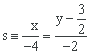

Ejercicios interactivos de posiciones relativas de dos rectas
Elige la opción correcta en cada caso:
1Estudia la posición relativa de las rectas r ≡ 3x − y + 1 = 0 y s ≡ 2x − 3y + 5 = 0. En caso de que sean secantes, halla el punto de corte
Los coeficientes de las rectas no son proporcionales:
Así que las rectas son secantes.
Hallemos el punto de intersección de las rectas:
Entonces el punto de intersección de r y s es .
2Estudia la posición relativa de las rectas r ≡ 3x − 6y + 4 = 0 y . En caso de que sean secantes, halla el punto de corte.
Pasemos la recta r a forma explícita:
Tenemos las dos rectas en forma explícita. Podemos ver así que las pendientes de ambas rectas coinciden: .
Entonces las rectas son paralelas.
3Estudia la posición relativa de las rectas y . En caso de que sean secantes, halla el punto de corte
Pasemos las dos rectas a forma general:
Se verifica que los coeficientes y los términos independientes de las rectas son proporcionales:
Entonces las rectas son coincidentes.
4Estudia la posición relativa de las rectas y s ≡ 8x + 2y − 27 = 0. En caso de que sean secantes, halla el punto de corte.
Pasemos la recta r a forma general:
Los coeficientes de las rectas r y s no son proporcionales:
Así que las rectas son secantes.
Hallemos el punto de intersección de las rectas:
Entonces el punto de intersección de las rectas r y s es .
Contesta a las siguientes cuestiones:
5Halla el valor de a para que las rectas r ≡ x − 2y + 3 = 0 y s ≡ ax + y − 2 = 0 no tengan ningún punto en común.
a =
Para que las rectas r y s no tengan ningún punto en común, ambas deben ser paralelas. Sabemos que si los coeficientes de las rectas son proporcionales, las rectas son paralelas. Imponemos esta condición y despejamos el valor de a:
6Halla el valor de a y b para que las rectas r ≡ ax + 3y + 6 = 0 y s ≡ 2x + 6y − b = 0 sean coincidentes.
a = , b =
Para que las rectas sean coincidentes, los coeficientes y términos independientes tienen que ser proporcionales. Imponemos la condición y despejamos los valores de a y b.
7Halla el valor de a para que las rectas y s ≡ 3x + ay − 4 = 0 sean secantes.
a ≠
En primer lugar, pasamos la recta r a forma general:
Para que las rectas r y s sean secantes, sus coeficientes no pueden ser proporcionales, es decir:
Entonces las rectas son secantes si .
8Halla el valor de a para que las rectas r ≡ (x, y) = (−1, 4) + t (a, 8) y s ≡ (x, y) = (5, −2) + t (2, −4) sean paralelas.
a =
Para que las rectas sean paralelas, sus pendientes tienen que coincidir.
Sabemos que la pendiente de una recta se puede calcular a partir de su vector director de la siguiente manera:
Si es un vector director de una recta, entonces es la pendiente de la recta.
Calculemos las pendientes de las rectas r y s:
Igualamos las pendientes y despejamos el valor de a:
Si tienes dudas puedes consultar la teoría